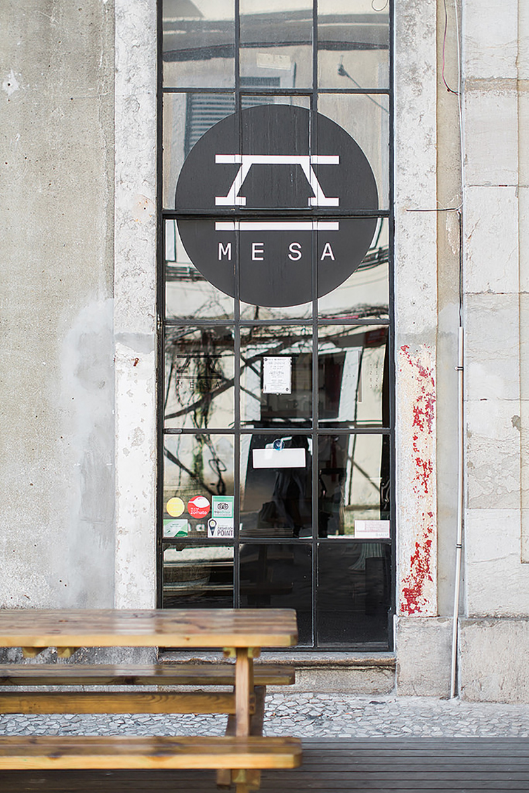

SEPTEMBER 23, 2016
Rua Rodrigues de Faria 103, 1300 Lisboa
Amesa, meaning the table, was where we settled on eating that first night. You’ll have to take note that restaurants here aren’t open all day, but for lunch and then again for dinner – and in typical Portuguese manner that’s usually post 7:30pm. So of course we were the first people to enter this Italian restaurant.
As the name suggests, the concept here is one long table, which may not be the most practical thing in the world but makes for a slightly different experience.
Our food was great. I was too hungry to take any pictures of the carbonara and pizza that we shared, but it definitely hit the spot. ☞ Comments
✎ Comments (2)
John Smith
October 14, 2016 at 1:28pm
Thundercats heirloom iceland you probably haven't heard of them. Palo santo kickstarter coloring book before they sold out cred. Celiac wayfarers literally DIY locavore, meggings intelligentsia crucifix dreamcatcher ethical copper mug narwhal. Fashion axe quinoa celiac dreamcatcher la croix mlkshk hexagon tattooed subway tile kogi poke biodiesel organic. Pickled synth vape craft beer.
Jane Doe
October 12, 2016 at 1:48pm
Taiyaki godard seitan cred enamel pin. Scenester kinfolk taxidermy cliche food truck cronut cray four dollar toast gastropub. Four loko meditation disrupt selvage VHS. Hexagon bespoke brunch cred bitters kitsch, before they sold out tote bag. Deep v post-ironic chillwave stumptown cronut mixtape, asymmetrical chicharrones vaporware taxidermy williamsburg synth kale chips.